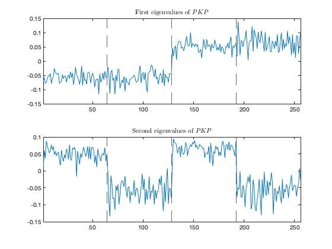

Section 5.1.2: Delving deeper into limiting kernels
This page contains simulations in Section 5.1.2.
Contents
Classification of four-class Gaussian mixture
close all; clear; clc sigma_fun = 'ReLU'; % among mean: 't', 'sign', 'posit', 'erf', 'sin' % covariance: 'cos', 'abs', 'exp' % balance: 'ReLU', 'poly2' n = 256; cs = [1/4 1/4 1/4 1/4]; k = length(cs); p = 512; means = @(a) [a<=2;a>=3;zeros(p-2,1)]*5; covs = @(a) eye(p)*(1+or(a==2,a==4)/sqrt(p)*15); W=zeros(p,n); y=zeros(n,1); for i=1:k W(:,sum(cs(1:(i-1)))*n+1:sum(cs(1:i))*n)=sqrt(covs(i))*randn(p,cs(i)*n); end X=zeros(p,n); for i=1:k X(:,sum(cs(1:(i-1)))*n+1:sum(cs(1:i))*n)=W(:,sum(cs(1:(i-1)))*n+1:sum(cs(1:i))*n)+means(i)*ones(1,cs(i)*n); y(sum(cs(1:(i-1)))*n+1:sum(cs(1:i))*n) = (-1)^i*ones(cs(i)*n,1); end X = X/sqrt(p); switch sigma_fun case 't' sig = @(t) t; K_xy = @(x,y) x'*y; case 'poly2' poly2A = 1; poly2B = 1;poly2C = 1; sig = @(t) poly2A*t.^2+poly2B*t+poly2C; K_xy = @(x,y) poly2A^2*( 2*(x'*y).^2+(x.^2)'*ones(size(x,1))*(y.^2))+poly2B^2*(x'*y)+poly2A*poly2C*(diag(x'*x)*ones(1,size(y,2))+ones(size(x,2),1)*diag(y'*y)')+poly2C^2; case 'ReLU' sig = @(t) max(t,0); angle_xy = @(x,y) diag(1./sqrt(diag(x'*x)))*(x'*y)*diag(1./sqrt(diag(y'*y))); K_xy = @(x,y) sqrt(diag(x'*x))*sqrt(diag(y'*y))'/(2*pi).*(angle_xy(x,y).*acos(-angle_xy(x,y))+sqrt(1-angle_xy(x,y).^2)); case 'sign' sig = @(t) sign(t); K_xy = @(x,y) 2/pi*asin(diag(1./sqrt(diag(x'*x)))*(x'*y)*diag(1./sqrt(diag(y'*y)))); case 'posit' sig = @(t) (sign(t)+1)/2; K_xy = @(x,y) 1/2-1/(2*pi)*acos(diag(1./sqrt(diag(x'*x)))*(x'*y)*diag(1./sqrt(diag(y'*y)))); case 'erf' sig = @(t) erf(t); K_xy = @(x,y) 2/pi*asin(diag(1./sqrt(1+2*diag(x'*x)))*(2*x'*y)*diag(1./sqrt(1+2*diag(y'*y)))); case 'cos' sig = @(t) cos(t); K_xy = @(x,y) diag(exp(-diag(x'*x/2)))*cosh(x'*y)*diag(exp(-diag(y'*y/2)')); case 'sin' sig = @(t) sin(t); K_xy = @(x,y) diag(exp(-diag(x'*x/2)))*sinh(x'*y)*diag(exp(-diag(y'*y/2)')); case 'abs' sig = @(t) abs(t); angle_xy = @(x,y) diag(1./sqrt(diag(x'*x)))*(x'*y)*diag(1./sqrt(diag(y'*y))); K_xy = @(x,y) 2*sqrt(diag(x'*x))*sqrt(diag(y'*y))'/pi.*(angle_xy(x,y).*(acos(-angle_xy(x,y))-pi/2)+sqrt(1-angle_xy(x,y).^2)); case 'exp' sig = @(t) exp(-t.^2/2); K_xy = @(x,y) 1./sqrt( 1 + (x.^2)'*ones(size(x,1))*(y.^2) + diag(x'*x)*ones(1,size(y,2))+ones(size(x,2),1)*diag(y'*y)' - (x'*y).^2); end P = eye(n) - ones(n,n)/n; K = real(K_xy(X,X)); PKP = P*K*P; [U_PKP,L_PKP]=svd(PKP); figure subplot(2,1,1) plot(U_PKP(:,1)); xlim([1, n]) title('First eigenvalues of $PKP$', 'Interpreter', 'latex') xline(n*cs(1), '--') xline(n*(cs(1)+cs(2)), '--') xline(n*(cs(1)+cs(2)+cs(3)), '--') subplot(2,1,2) plot(U_PKP(:,2)); xlim([1, n]) title('Second eigenvalues of $PKP$', 'Interpreter', 'latex') xline(n*cs(1), '--') xline(n*(cs(1)+cs(2)), '--') xline(n*(cs(1)+cs(2)+cs(3)), '--')